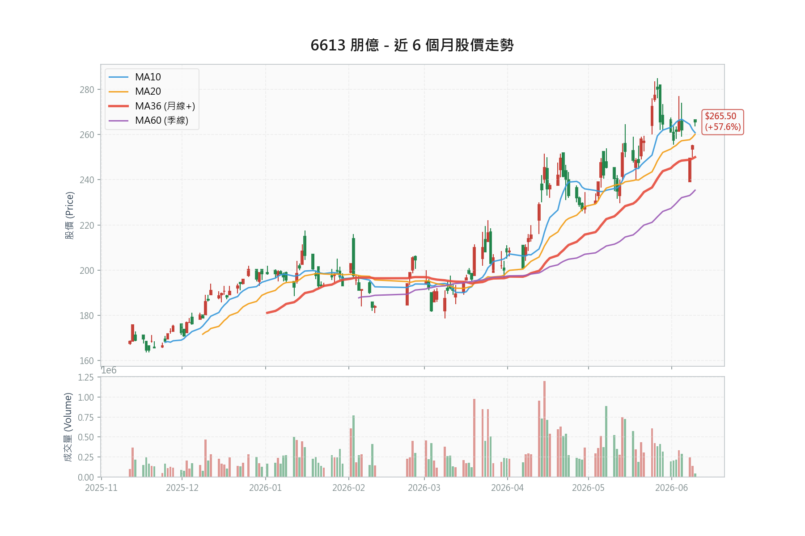

朋億 (6613) 深度研究報告
6613.TWO（上櫃）｜半導體廠務系統｜報告日期 2026年6月10日
現價（2026/06/10）
266.0 元・TPEx MIS
評等
買進 Buy
中性目標（2026E）
302 元・PE 17x
樂觀目標（2027E・中信）
400 元・12-18 個月
⚠️ 現價追價風報比不佳（中性目標對季線停損僅 1.2:1），建議回檔佈局——詳見第 1 章風報比分析。

1投資觀點總結 Investment Summary
核心投資論點
- 🟢 在手訂單創歷史紀錄（核彈級前瞻指標）：4M26（4 月）在手訂單突破 130 億元，中信預期 2Q26 往 150 億元邁進。對照歷史軌跡：2024 年高峰約 100 億、4Q25 僅 60 幾億、1Q26 躍升至 103 億——已超越歷史紀錄。主要來自美系記憶體客戶兩座新廠、中國新接兩廠專案、台系 OSAT 長交期訂單。訂單轉換為營收約需 1 季，奠定 2H26 起逐季高成長基礎。
- 1Q26 財報優於預期：營收 23.42 億（YoY +8.95%）、毛利率 32.09%、EPS 3.84 元，優於中信 2 月報告預估的 3.2 元。惟須注意：超預期部分主因 3 月多項專案結案一次性挹注，不宜直接線性外推。
- 營收動能自 2Q26 起顯著增強：5 月營收 10.83 億（YoY +81.7%），前 5 月累計 41.36 億（YoY +25.8%）。中信預估 2Q26 營收 27.7 億（QoQ +18%、YoY +35%），2H26 增速更勝 1H26，1Q26 即為全年谷底。
- 2025 年谷底已確認：2025 全年營收 89.15 億（YoY -14.13%）、EPS 13.37 元（YoY -18.7%），優於年中時市場悲觀預估的 12.0-12.5 元。2026/2027 年中信預估 EPS 為 17.77 / 23.55 元。
- 毛利率展望上修：AI 驅動廠務市場供不應求，廠商對新案具挑選彈性。中信將 2026/2027 年毛利率自 28.1%/28.6% 上修至 29.7%/30.3%。惟 2Q26 因中國案（毛利率較低）占比提升，毛利率預估降至 27.5%，為短期最大檢驗點。
- 評價低估且有殖利率支撐：Forward PE 15.0x（2026E），低於廠務同業；2025 年度股息 10 元（現價殖利率約 3.8%），中信預估 2026 年度股息 13.3 元（約 5.0%），提供下檔保護。
- 技術面多頭但短線過熱：現價 266 元站上月線（MA20 約 260）與季線（MA60 約 235），均線多頭排列。惟中信 6/10 報告基準價為 255 元，現價已較其上漲逾 4%，短線追價風險升高。
📊 風險報酬比分析 (Risk/Reward Analysis)
價位架構（2026/06/10，現價 266.0 元）
| 指標 | 價位 | 計算依據 | 說明 |
|---|---|---|---|
| 現價 | 266.0 | TPEx MIS（2026/06/10） | 中信報告基準價 255 |
| 技術壓力 | 270 | 近期高點 | 距現價僅 1.5% |
| 技術支撐 1 | 260 | 月線（MA20） | 短期防守線 |
| 技術支撐 2 | 235 | 季線（MA60） | 中期支撐 |
| 目標價（中性） | 302 | PE 17x × 2026E EPS 17.77 | 本報告推估，12 個月視角 |
| 目標價（樂觀） | 400 | PE 17x × 2027E EPS 23.55 | 中信目標價，12-18 個月視角 |
風報比計算表
| 目標 / 停損組合 | 上檔空間 | 下檔風險 | 風報比 | 評註 |
|---|---|---|---|---|
| 中性 302 / 跌破月線 258 | +36 元（+13.5%） | -8 元（-3.0%） | 4.5:1 | 停損極窄，被日常波動掃出機率高 |
| 中性 302 / 跌破季線 235 | +36 元（+13.5%） | -31 元（-11.7%） | 1.2:1 | 波段視角下，現價進場吸引力不足 |
| 樂觀 400 / 跌破季線 235 | +134 元（+50.4%） | -31 元（-11.7%） | 4.3:1 | 須 2027 年業績兌現，持有期 12-18 個月 |
⚠️ 方法論警示
以窄停損（如月線下方 8 元）搭配遠目標（400 元）可算出 16:1 以上的風報比，但這是數字幻覺——停損越貼近現價，風報比越漂亮，被洗出的機率也越高，兩者必須一起評估。目標價與停損的時間尺度也須匹配：400 元目標基於 2027 年業績，若搭配 3% 的短線停損，多數情況會在業績兌現前就被掃出場。
📌 風報比結論
- 若以 2026 年業績（中性目標 302）衡量，現價 266 的上檔僅 13.5%，對應季線停損的風報比僅 1.2:1，不支持現價重倉追價。
- 若認同 2027 年成長路徑（中信目標 400），以季線為停損的風報比 4.3:1 屬合理，但前提是接受 12-18 個月持有期、期間可能的回撤、以及 2Q26 毛利率下滑的檢驗。
- 操作結論：現價僅適合輕倉試單；核心部位等回檔至 250-260（月線附近）佈局；跌破季線 235 停損或大幅減碼。
- 重算紀律：風報比對獲利率假設極為敏感（過往案例：毛利率僅下修 1.2 ppts，中性風報比即自 2.6:1 降至 1.9:1）。2Q26 財報公布後必須以新數據重算本表，不得沿用。
進場策略建議表
| 策略 | 進場價 | 停損 | 目標 | 風報比（以區間中值計） | 倉位建議 |
|---|---|---|---|---|---|
| 動能試單型 | 266-270 | 258（跌破月線） | 302 | 約 3.4（+34 / -10） | 輕倉，被掃出即等回檔 |
| 回檔佈局型 | 250-260 | 235（跌破季線） | 302 / 400 | 中性 2.4 / 樂觀 7.3 | 核心部位 |
| 強支撐加碼型 | 235-240 | 225 | 302 / 400 | 中性 4.9 / 樂觀 12.5 | 跌至季線且基本面未變時加碼 |
賣出劇本（進場時預寫，之後只執行、不再重新決定）
| 類別 | 觸發條件 | 動作 |
|---|---|---|
| 技術停損 | 收盤跌破季線 235 元 | 全數出場或減至底倉 |
| 獲利率訊號 | 2Q26 毛利率低於 26%（中信估 27.5%） | 減碼一半，重新檢驗「毛利率上修」敘事 |
| 訂單訊號 | 在手訂單停止上修或回落、中信下修 2027 年假設 | 出場 |
| 營收訊號 | 2Q26 單季營收低於 25 億（預估 27.7 億，即 6 月須開出約 9.7 億以上） | 減碼並下調情境 |
| 部位上限 | 以「即使歸零也能冷靜檢討」的規模為限 | 流通籌碼少、回檔劇烈，不宜重倉單押 |
💡 參考點替換法
持有中每次檢視，強制自問：「若我現在手上是現金，會以今日價格買進這檔嗎？」答案若否，部位就不該留著——避免被買進成本綁架。
2資料來源摘要 Data Sources Summary
2.1 官方數據與新聞
「Q3 累計 EPS 10.14 元」TPEx 櫃買中心（2026/01/13 查詢）
「合約負債 2025Q3 為 13.41 億元，較前季持平」MoneyDJ（歷史數據查詢）
「朋億 12 月營收 10.83 億元，年減 9.35%，1-12 月達 89.15 億元」鉅亨網（2026/01/10）
「朋億去年每股純益 17.1 元創新高，每股擬配息 9 元」經濟日報（2025/02/25）（註：與中信彙整之 2024 年度股息 11.90 元不一致，可能為初步擬議數，待查證）
「朋億*今年營收挑戰新高」工商時報（2025/12/13）
2.2 投顧與外資報告專區
📊 券商報告總覽表
| 日期 | 券商 | 評等 | 目標價 | 當時股價 | 2025E EPS | 2026E EPS | 2027E EPS |
|---|---|---|---|---|---|---|---|
| 2026/06/10 | 中信證券 | 買進（B） | 400 | 255 | 13.37（實際） | 17.77 | 23.55 |
| 2026/02/24 | 中信證券 | 買進（B） | 265 | 194 | 13.42 | 15.37 | 19.06 |
| 2025/11/24 | 中信證券 | 買進（B） | 235 | 169 | 13.88 | 16.15 | 18.40 |
| 2025/08/22 | 中信證券 | 買進（B） | 245 | 197 | 11.89 | 16.22 | - |
| 2025/07/14 | 中信證券 | 買進（B）首評 | 225 | 177.5 | 12.03 | 16.08 | - |
| 2025/09/04 | 凱基論壇 | （公司簡報） | - | - | - | - | - |
「1Q26 為全年谷底，2H26 增速更上層樓；在手訂單 4M26 突破 130 億元，2Q26 有望往 150 億元邁進；上修 2026/2027 年 EPS 至 17.77/23.55 元，目標價 400 元（2027 年 EPS × 17 倍 PER）」中信證券（2026/06/10）・買進（B）・目標價 400 元
「記憶體大擴產潮受惠股，在手訂單突破百億（103 億，4Q25 僅 60 幾億）；惟訂單轉換為營收至少需 1 季」中信證券（2026/02/24）・買進（B）・目標價 265 元
「2025F EPS 13.88 元；2026F 營收 110.52 億（+29.87% YoY），EPS 16.15 元」中信證券（2025/11/24）・買進（B）・目標價 235 元
「高科技製程設備製造佔營收約 48%（20.07 億），水氣化系統整合服務約 46%；聖暉（5536）持股 55.52%；集團員工合計 928 人」凱基證券 2025Q3 投資論壇・公司簡報（2025/09/04）
2.3 觀點分歧表 (Divergence Table)
⚠️ 資訊結構警示
公開研究僅中信證券一家持續覆蓋，缺乏真正的悲觀派對照組，「分歧」實為同一分析師的預估演進。單一資訊源的確認偏誤風險須自行對沖——本報告以「中信預估打折」作為保守情境。
| 分析面向 | 較樂觀觀點 | 較保守觀點 | 本報告判斷 |
|---|---|---|---|
| 2026E EPS | 中信 6 月：17.77 元 | 中信 2 月：15.37 元 | 採 17.77 元為中性、15.5 元為保守情境 |
| 目標價 | 中信 6 月：400 元（2027E 基準） | 中信 2 月：265 元 | 中性採 302 元（2026E × 17x），400 元視為樂觀 |
| 2Q26 毛利率 | 1Q26 實際 32.09% | 中信預估 2Q26 降至 27.5% | 採中信預估，8 月 Q2 財報為關鍵驗證點 |
| 在手訂單 | 4M26 已 130 億、往 150 億邁進 | 訂單轉營收需 1 季以上，材料短缺恐遞延認列 | 訂單真實性高（連 3 季上修），但認列節奏存在不確定性 |
3財務數據分析 Financial Data Analysis
3.1 歷史財務趨勢表（資料來源：中信證券 2026/06/10 報告彙整）
| 年度 | 營收（億） | 稅後淨利（億） | EPS（元，公告基本） | 毛利率 | 營益率 |
|---|---|---|---|---|---|
| 2022 | 85.93 | 7.97 | 11.74 | 22.37% | 13.76% |
| 2023 | 91.40 | 10.42 | 14.95 | 25.44% | 16.16% |
| 2024 | 103.82 | 12.79 | 17.10 | 29.81% | 18.51% |
| 2025 | 89.15 | 10.40 | 13.37 | 32.36% | 19.02% |
| 2026 Q1 | 23.42 | 2.99 | 3.84 | 32.09% | 20.16% |
📉 觀察
2025 年營收年減 14.13%，但毛利率逆勢升至 32.36%，主因小型工程擴充案件（毛利率較高）佔比增加。2026 年隨大型新建案放量，中信預估全年毛利率回落至 29.7%——營收成長與毛利率回落並存是 2026 年的正確基準預期，不應以 1Q26 的 32.09% 線性外推。
3.2 近期月營收
| 月份 | 狀態 | 金額（億） | MoM | YoY | 說明 |
|---|---|---|---|---|---|
| 2026/01 | ✅ 已知 | 6.41 | -40.8% | -29.6% | 傳統淡季與專案進度空窗 |
| 2026/02 | ✅ 已知 | 6.31 | -1.6% | +6.8% | 營收止穩回升 |
| 2026/03 | ✅ 已知 | 10.70 | +69.6% | +65.2% | 多項台系與中系專案結案挹注，創同期新高 |
| 2026/04 | ✅ 已知 | 7.11 | -33.5% | +30.8% | 專案空窗期，仍維持 YoY 雙位數增長 |
| 2026/05 | ✅ 已知 | 10.83 | +52.3% | +81.7% | 美系記憶體與封測廠新專案動工，動能強勁 |
✅ 營收數據已透過櫃買中心與官方公告驗證（最後更新：2026/06/10）。中信 6/10 報告亦以「5M26 開出 10.8 億元營收」作為 2Q26 加速的佐證。
3.3 近期營收總結
| 項目 | 金額/數據 | YoY |
|---|---|---|
| 2026 前 5 月累計營收 | 41.36 億 | +25.8% |
| 2026 Q1 累計營收 | 23.42 億 | +8.95% |
| 2026 5 月營收 | 10.83 億 | +81.7% |
💡 亮點
前 5 月累計年增 25.8%，且月營收波動軌跡（1 月谷底、3 月結案高峰、5 月新案動工放量）與中信「1Q26 為全年谷底、2Q26 起逐季成長」的劇本吻合，初步驗證 2026 年高成長判斷。
3.4 2026 Q1 實際財報與季度展望
1Q26 實際數據（已公布）
| 項目 | 實際數據 | 對照 |
|---|---|---|
| 營收 | 23.42 億 | YoY +8.95%，優於中信 2 月預估的 21.5 億 |
| 毛利率 | 32.09% | 優於預估的 31.9%，主因 3 月專案結案挹注 |
| 營益率 | 20.16% | 較 4Q25（13.62%，含信用減損提列）大幅回升 |
| 稅後淨利 | 2.99 億 | YoY +28.81% |
| EPS | 3.84 元 | 優於中信預估 3.2 元，創歷年同期新高 |
中信季度預估（2026/06/10）
| 季度 | 營收（億） | QoQ | 毛利率 | EPS（元） |
|---|---|---|---|---|
| 2Q26F | 27.66 | +18.1% | 27.51% | 3.55 |
| 3Q26F | 32.63 | +18.0% | 29.33% | 4.84 |
| 4Q26F | 35.15 | +7.7% | 30.26% | 5.54 |
合約負債與在手訂單的背離
| 時間點 | 合約負債（億，MoneyDJ） | 在手訂單（億，中信訪查） |
|---|---|---|
| 2024Q4 | 20.09（高峰） | 約 100（2024 年水準） |
| 2025Q1 | 17.10 | - |
| 2025Q2 | 13.41 | - |
| 2025Q3 | 13.41 | - |
| 2025Q4 | 10.97 | 60 幾億 |
| 1Q26 | （待 MoneyDJ 更新） | 103 |
| 4M26 | - | 130（往 150 邁進） |
💡 背離解讀
合約負債（已預收款項）自 2024Q4 高峰一路下滑，但在手訂單自 4Q25 起翻倍以上躍升。背離主因：（1）新接大型專案多處於設計/下料/客戶審核階段，尚未進入收款里程碑；（2）廠務上游材料短缺（部分長交期材料等待達半年），客戶以先下長交期訂單（類似訂金概念）鎖定產能，此類訂單尚未反映於預收款。結論：合約負債作為領先指標的效力暫時失靈，當前應以在手訂單與月營收為主要追蹤指標；但也須留意在手訂單為券商訪查數字，非財報科目，無法直接稽核。
4籌碼數據分析 Chip Analysis
4.1 集保戶股權分散表 (TDCC)
| 日期 | 持股超過 200 張（%） | 持股超過 1,000 張（%） | 變化解讀 |
|---|---|---|---|
| 2026/06/05 | 65.65% | 55.52% | 籌碼高度集中 |
| 2026/05/29 | 65.94% | 55.52% | - |
| 2026/05/22 | 65.67% | 55.52% | - |
| 2026/05/15 | 65.57% | 55.52% | - |
✅ 解讀
千張大戶持股穩定在 55.52%——此即母公司聖暉（5536）的持股，等同鎖定逾半籌碼。中實戶（超過 200 張）維持在 65.6% 上下，籌碼結構高度集中。實際流通籌碼有限，漲跌幅都容易被放大，這是雙面刃。
4.2 三大法人買賣超
近 5 日三大法人買賣超動向（單位：張）：
| 日期 | 外資 | 投信 | 自營商 | 三大法人合計 |
|---|---|---|---|---|
| 2026/06/09 | +51.4 | -0.4 | +1.7 | +52.6 |
| 2026/06/08 | +16.3 | 0.0 | -20.6 | -4.2 |
| 2026/06/05 | -47.9 | -0.2 | -7.5 | -55.7 |
| 2026/06/04 | +28.4 | 0.0 | -6.4 | +22.0 |
| 2026/06/03 | +27.0 | 0.0 | -0.7 | +26.3 |
| 累計 | +75.2 | -0.6 | -33.5 | +41.1 |
📊 解讀
外資近 5 日 4 天買超、累計 +75.2 張，為主要買盤；自營商小幅調節，投信無部位。惟絕對量體小（單日數十張），對股價的解釋力有限，籌碼面主要仍由大戶結構決定。外資持股比 7.71%（中信 6/10），較 2 月的 5.60% 上升，中期趨勢偏多。
4.3 融資融券趨勢
最近可得資料（2026/05/04，MoneyDJ）：融資餘額 838 張、無券賣，券資比 0%。融資餘額自 4 月下旬緩增（786 至 838 張），水位仍低。
⚠️ 股價自 5 月初 236 元漲至 266 元（漲幅約 13%），需持續觀察融資是否加速堆積形成浮額；目前尚無過熱跡象。
5產業與基本面深度分析 Deep Dive
產業定位
朋億為半導體廠務系統供應商，成立於 1997 年，三大業務：
- 高潔淨度化學品供應與分裝系統、特殊氣體供應系統（水氣化供應系統）
- 濕製程設備（Wet Process）
- 剝離廢液再生、綠能環保系統整合
產業上下游關係
上游：化學品/氣體/廠務材料供應商 → 朋億（系統整合與設備製造） → 下游：晶圓廠/記憶體廠/封測廠/面板廠
關鍵驅動因素
| 驅動因素 | 正面影響 | 負面影響 |
|---|---|---|
| 記憶體大擴產潮（美光日本/台灣/新加坡/美國多廠） | 化學主系統訂單爆發，為本輪成長主軸 | 擴產計畫若延後，認列遞延 |
| 中國邏輯/記憶體建廠回溫（中芯、華虹、長鑫、長江） | 中國基地（上海、蘇州）就近承接 | 中國案毛利率僅約 15-20%，拉低整體毛利率；地緣政治風險 |
| 台系 OSAT 先進封裝擴建（虎尾等複數建案） | 設備包與二次配訂單 | 客戶驗證期長 |
| 廠務上游材料短缺 | 訂單能見度提前鎖定（長交期訂單） | 交貨遞延風險，認列時點不確定 |
公司優勢
- 技術與經驗門檻：具備 Foundry、記憶體廠承做經驗，廠務系統整合專業門檻高
- 客戶黏著度高：一旦導入，轉換成本極高
- 集團綜效：聖暉（5536）持股 55.52%，集團加持有助斬獲台積電、美光等業主訂單
- 據點佈局完善：中國（上海、蘇州）、新加坡（Novatech E&C）、馬來西亞、日本、美國
公司弱勢
- 毛利率隨產品組合大幅波動：中國大型新建案毛利率約 15-20%，與小型擴充工程（30% 以上）落差大，單季毛利率波動可達 5 個百分點以上（如 1Q26 的 32.1% 對 2Q26F 的 27.5%）
- 區域集中度：中國占比約 45%（4Q25），出口管制與地緣政治風險須持續監控
- 流通籌碼有限：市值約 198 億元（中信 6/10），聖暉鎖定 55.52%，外資持股僅 7.71%，流動性受限
- 主要競爭對手：帆宣（6196）、矽科宏晟（6725），大型案存在殺價競爭風險
6估值分析 Valuation Analysis
6.1 多重估值法
本益比法（P/E），現價 266 元
| 基準 | EPS | 隱含 PE |
|---|---|---|
| Trailing（2025 實際） | 13.37 | 19.9x |
| Forward（2026E，中信） | 17.77 | 15.0x |
| 2027E（中信） | 23.55 | 11.3x |
- 中信歷次目標價採 14x 至 17x PER；本報告同業比較（見第 10 章）Trailing PE 均值約 35.9x
- 朋億過往因「成熟製程概念」被給予較低本益比；評價收斂的催化劑為客戶版圖多元化（記憶體、台系 OSAT）兌現程度
✅ 結論
Forward PE 15.0x 相對同業有顯著折價。但須誠實面對折價存在的理由：單一券商覆蓋、流通籌碼少、中國占比高、毛利率波動大。折價收斂需要 2Q26 起的財報逐季驗證，而非一步到位。
股價淨值比（P/B）
- 最新每股淨值 65.69 元（1Q26）
- 當前 P/B：266 / 65.69 = 4.05x
- 歷史 P/B 區間約 1.5x - 4.5x，目前處於區間上緣，已反映高成長預期
殖利率支撐
- 2025 年度股息 10 元（現價殖利率約 3.8%）；中信預估 2026 年度股息 13.3 元（約 5.0%）
- 歷年配發率約 6-7 成，為下檔保護來源之一
6.2 目標價推算
| 情境 | 估值方法 | 預估基準 | 目標價 | 時間尺度 |
|---|---|---|---|---|
| 保守 | PE 15x | 2026E EPS 17.77 | 266 | 12 個月 |
| 中性 | PE 17x | 2026E EPS 17.77 | 302 | 12 個月 |
| 樂觀 | PE 17x | 2027E EPS 23.55 | 400 | 12-18 個月（中信目標價） |
⚠️ 估值警示
現價 266 元已等於保守目標價，意即「2026 年業績兌現 + 15 倍評價」已被完全定價。後續上漲動能須來自（1）中性情境的評價提升至 17x，或（2）市場提前反映 2027 年業績。P/B 4.05x 處於歷史上緣亦提示：當前價位的安全邊際來自成長兌現，而非便宜。
6.3 中信目標價上修的三因子拆解（265 → 400 元，+51%）
任何券商目標價變動可拆為三個乘數，逐一檢驗佐證強度：
| 因子 | 變化 | 貢獻 | 可信度評估 |
|---|---|---|---|
| EPS 上修 | 2027E 19.06 → 23.55 元 | +23.6% | 較高：有 1Q26 實績超預期、在手訂單訪查（103 → 130 億）佐證 |
| 估值倍數擴張 | 15x → 17x | +13.3% | 較低：由「廠務供不應求」敘事驅動，無獨立可驗證數據 |
| 基準年延伸 | 2H26-1H27（隱含 EPS 約 17.7 元）→ 2027 全年 | +7.9% | 最隱蔽：估值基準悄悄推遠約半年，變相提前折現 |
驗算：1.236 × 1.133 × 1.079 ≈ 1.51，即 265 × 1.51 ≈ 400 ✓
⚠️ 戴維斯雙殺壓力測試
本次上修是 EPS、倍數、基準年三者同向的乘法效應（雙擊），但反向具不對稱速度——倍數壓縮瞬間反映市場情緒，EPS 下修則等財報驗證。若 2Q26 不如預期、預估退回 2 月版本（2027E 19.06 元、15x、基準縮回 2H26-1H27），目標價即回到 265 元，現價上檔歸零；若進一步落入保守情境（2026E 15.5 元 × 15x），對應 233 元，較現價約 -12%。三因子中有兩項（倍數、基準年）缺乏獨立佐證，是 400 元目標價的主要脆弱點。
7競爭優勢護城河分析 Competitive Moat
| 評估維度 | 評分 | 說明 |
|---|---|---|
| 技術護城河 | ★★★★☆ | 廠務系統整合專業門檻高，具記憶體/Foundry 承做經驗 |
| 客戶黏著度 | ★★★★☆ | 轉換成本高，長期合作關係；惟大型新建案仍須競標（美光新加坡案曾因價格競爭僅取得 slurry 訂單） |
| 規模經濟 | ★★★☆☆ | 規模小於帆宣等大廠，大型案議價力受限 |
| 網路效應 | ★★☆☆☆ | 無明顯網路效應 |
| 法規護城河 | ★★☆☆☆ | 無特殊執照需求 |
綜合評分：★★★☆☆（中等護城河）——供不應求的市況暫時放大了議價力（可挑案、挑毛利率），但此屬週期紅利而非結構性護城河，景氣反轉時會雙向放大。
8情境分析 Scenario Analysis
基準：2026 全年（1Q26 實際 + 中信季度預估推算），目標價一律以 PE 17x × 2026E EPS 計
| 情境 | 機率 | 關鍵假設 | 2026 EPS | 目標價 |
|---|---|---|---|---|
| 樂觀 | 30% | 台灣區高毛利案放量超預期，全年毛利率守住 31% 以上，年底在手訂單破 150 億 | 18.5 元 | 314 元 |
| 中性 | 50% | 2H26 營收逐季成長如中信預估，全年毛利率 29.7% | 17.77 元 | 302 元 |
| 保守 | 20% | 2Q26 中國案毛利率壓縮超預期，且材料短缺使 2H26 認列遞延 | 15.5 元 | 263 元 |
❗ IMPORTANT
機率加權期望目標價約 297 元（314×0.3 + 302×0.5 + 263×0.2），對照現價 266 元，隱含 12 個月期望報酬約 +12%。中信的 400 元目標價屬 2027 年業績的提前反映，不在本表 2026 年情境之內——兩者時間尺度不同，混用會高估短期上檔。
⚠️ 機率紀律聲明
上表機率為研究者主觀賦值，目前僅有中信單一覆蓋、無法人共識分布可校準。後續每月營收與 2Q26 財報開出時，須回測情境假設本身是否錯誤（而非只更新數字）：例如 6 月營收若低於 9 億，代表中性情境的「2Q26 營收 27.7 億」假設失效，應同步下調中性機率，而非僅微調 EPS。
9風險評估 Risk Assessment
9.1 風險評分卡
| 風險類別 | 評分 | 說明 |
|---|---|---|
| 產業風險 | ★★★☆☆ | 半導體週期波動大；2026 上行週期已由訂單與營收雙重確認 |
| 財務風險 | ★★☆☆☆ | 1Q26 現金 36.56 億、無重大長債，財務穩健 |
| 估值風險 | ★★★★☆ | P/B 處歷史上緣、現價已達保守目標價，回檔空間大於安全邊際 |
| 資訊風險 | ★★★☆☆ | 單一券商覆蓋；在手訂單為訪查數字，非可稽核之財報科目 |
| 管理風險 | ★★☆☆☆ | 經營團隊穩定，聖暉集團治理加持 |
9.2 關鍵風險因素
- 2Q26 毛利率檢驗：中信預估 2Q26 毛利率自 32.1% 降至 27.5%。若實際低於此水準，「毛利率具改善契機」的上修敘事將受打擊，股價對此敏感度高。
- 上游材料交期：部分長交期材料等待達半年，營收認列時點可能遞延，使單季財報低於預期（中信列為首要風險因子）。
- 同業殺價競爭：美光新加坡案的前例顯示，大型案競標中朋億可能因價格競爭縮減量體；帆宣、矽科宏晟均在爭奪同一波擴產需求。
- 中國與地緣政治：中國營收占比約 45%，出口管制升級或中國需求再度放緩均構成下行風險。
- 估值與籌碼：現價已反映保守情境，且 6/10 單日上漲逾 4%（中信上修目標價當日），追價者承擔短線利多出盡風險；流通籌碼少使回檔同樣猛烈。
10同業觀察與比較 Peer Comparison
| 公司 | 代號 | 股價 | 2025 EPS | Trailing PE | 動態觀察 | 趨勢 |
|---|---|---|---|---|---|---|
| 朋億 | 6613 | 266.0 | 13.37 | 19.9x | 1Q26 EPS 3.84 元（YoY +28.8%），在手訂單 130 億 | ↑ 強勢 |
| 信紘科 | 6667 | 274.5 | 14.60 | 18.8x | 營收動能穩定，半導體廠務拉貨強 | → 平穩 |
| 聖暉 | 5536 | 1140.0 | 31.25 | 36.5x | 母公司，持股朋億 55.52% | ↑ 回升 |
| 帆宣 | 6196 | 532.0 | 12.05 | 44.1x | 廠務訂單能見度高，材料短缺待解 | → 平穩 |
| 漢唐 | 2404 | 1185.0 | 26.80 | 44.2x | 台積電擴產主力，評價享高溢價 | ↑ 強勢 |
📝 同業評價比較
朋億 Trailing PE 19.9x 低於同業均值（約 35.9x），Forward PE 15.0x 折價更明顯。惟折價部分反映體質差異（流通籌碼、覆蓋度、中國占比），合理收斂目標宜對標體質最接近的信紘科（18.8x）而非漢唐/帆宣的 44x。
（註：同業股價與 EPS 為 2026 年 6 月初彙整，未經即時逐筆驗證，引用前請確認。）
（註：同業股價與 EPS 為 2026 年 6 月初彙整，未經即時逐筆驗證，引用前請確認。）
11管理層評估 Management Assessment
| 評估項目 | 評分 | 說明 |
|---|---|---|
| 過往承諾達成率 | ★★★★☆ | 中信評價「營收如預期開出且通常優於預期」；1Q26 實際即優於其預估 |
| 資本配置策略 | ★★★☆☆ | 歷年配發率約 6-7 成；2025 年度股息 10 元，中信預估 2026 年度 13.3 元 |
| 財報透明度 | ★★★☆☆ | 定期公告營收；法說頻率低（2025/09 凱基論壇為近期少數公開簡報） |
12投資決策檢查清單 Investment Checklist
進場前檢查
- 月營收持續成長？✅ 前 5 月累計 YoY +25.8%，5 月 YoY +81.7%
- 在手訂單充足？✅ 4M26 達 130 億創歷史紀錄（惟為訪查數字，非財報科目）
- 估值合理？⚠️ Forward PE 15.0x 相對同業折價，但現價已達保守目標價 266，P/B 處歷史上緣
- 無重大利空？✅ 未見重大負面消息
- 技術面站穩？✅ 多頭排列，惟距月線乖離有限、距 270 壓力僅 1.5%
持有中監控
- 2025 年報符合預期？✅ EPS 13.37 元，優於市場悲觀預期
- 1Q26 財報確認？✅ EPS 3.84 元，優於中信預估 3.2 元
- 2Q26 財報毛利率？預計 2026/08 中旬公布，驗證 27.5% 預估，為當前最重要觀察點
- 在手訂單是否如期往 150 億邁進？追蹤中信後續更新與月營收轉換
- 技術面穩健？✅ 站穩月線之上
13關鍵事件日曆 Key Events Calendar
| 日期 | 事件 | 重要性 |
|---|---|---|
| 每月 10 日前 | 月營收公告（驗證 2Q26 27.7 億預估，6 月需開出約 9.7 億以上） | ★★★★ |
| 2026/06（預估） | 股東會 | ★★★ |
| 2026/08 中旬（預估） | 2Q26 財報：毛利率 27.5% 預估之驗證點 | ★★★★★ |
| 2026/Q3（預估） | 除息（2025 年度股息 10 元） | ★★★ |
| 2026/11 中旬（預估） | 3Q26 財報：台灣區放量與毛利率回升驗證 | ★★★★★ |
14技術面深度分析 Technical Analysis
均線架構
- 現價 266.0 元 vs 月線 260 元：✅ 站上（+2.3%）
- 現價 266.0 元 vs 季線 235.4 元：✅ 站上（+13.0%）
- 均線排列：多頭排列（短均在上、月線高於季線）
型態學分析
- 近期型態：股價沿月線強勢創高，6/10 受中信上修目標價激勵跳漲（基準價 255 至現價 266）
- 關鍵支撐：260（月線）、235（季線）
- 關鍵壓力：270（近期高點，距現價僅 1.5%）
操作建議
與第 1 章進場策略表一致：
| 策略 | 進場點 | 停損 | 目標 |
|---|---|---|---|
| 動能試單（輕倉） | 266-270 | 258 | 302 |
| 回檔佈局（核心） | 250-260 | 235 | 302-400 |
⚠️ 季線乖離率 +13.0%，短線乖離偏大；歷史上此類乖離常以回測月線方式收斂，支持「回檔佈局優於追價」的結論。
15未來觀察重點 Research Outlook
- 在手訂單：2Q26 能否如中信預期往 150 億元邁進（同時認列 27 億後仍淨增）
- 2Q26 毛利率：27.5% 預估的驗證；低於 26% 即為警訊
- 台灣區域放量：3Q26 起高毛利台灣案認列進度，驅動毛利率回升至 29% 以上
- 台系客戶機台驗證：濕製程機台 demo 驗證原預期 2026 年中取得核可，進入封裝廠競標行列——追蹤是否如期
- 材料短缺與交期：長交期材料（等待達半年）對認列節奏的影響
- 中國占比與毛利率結構：區域組合變化對單季毛利率的擾動
- 融資餘額：自低水位（838 張）是否加速堆積
16建議提問範例 Q&A Examples
- 在手訂單 130 億中，長交期訂單（訂金性質）占比多少？取消或遞延的違約條款如何設計？
- 2Q26 中國案毛利率實際落點？中國大型案 15-20% 毛利率的報價環境是否改善？
- 台系客戶濕製程機台驗證進度？是否如期於 2026 年中取得核可？
- 材料短缺下，公司備料策略對營運資金與存貨跌價風險的影響？
- 毛利率自 2024 年 29.8% 升至 2025 年 32.4%，再預估回落至 29.7%——產品組合各占多少貢獻？
- 與帆宣、矽科宏晟在記憶體擴產案的競標勝率與定價策略差異？
17附錄：券商報告彙整 Appendix
已分析報告清單
| 日期 | 券商/投顧 | 評等 | 目標價 | 當時股價 | 2026E EPS | 2027E EPS |
|---|---|---|---|---|---|---|
| 2026/06/10 | 中信證券 | 買進（B） | 400 | 255 | 17.77 | 23.55 |
| 2026/02/24 | 中信證券 | 買進（B） | 265 | 194 | 15.37 | 19.06 |
| 2025/11/24 | 中信證券 | 買進（B） | 235 | 169 | 16.15 | 18.40 |
| 2025/08/22 | 中信證券 | 買進（B） | 245 | 197 | 16.22 | - |
| 2025/07/14 | 中信證券 | 買進（B）首評 | 225 | 177.5 | 16.08 | - |
| 2025/09/04 | 凱基論壇 | （公司簡報） | - | - | - | - |
財測上修軌跡（中信證券）
| 報告日期 | 26E 營收（億） | 26E 毛利率 | 26E EPS | 27E 營收（億） | 27E EPS | 目標價 |
|---|---|---|---|---|---|---|
| 2026/06/10 | 118.9 | 29.7% | 17.77 | 148.7 | 23.55 | 400 |
| 2026/02/24 | 112.0 | 28.1% | 15.37 | 129.4 | 19.06 | 265 |
| 2025/11/24 | 110.5 | 29.2% | 16.15 | 126.9 | 18.40 | 235 |
| 2025/08/22 | 114.8 | 28.1% | 16.22 | - | - | 245 |
| 2025/07/14 | 114.2 | 29.0% | 16.08 | - | - | 225 |
📝 反面提醒
半年內目標價自 235 元上修至 400 元（+70%），上修依據為在手訂單躍升與毛利率展望改善。上修軌跡陡峭本身即是風險——若任一驗證點（2Q26 毛利率、訂單轉換）失誤，下修的幅度與速度可能同樣劇烈（詳見第 6.3 節三因子拆解）。
在手訂單變化軌跡
| 時間點 | 在手訂單（億） | 來源 |
|---|---|---|
| 4M26 | 130（往 150 邁進） | 中信 2026/06/10 |
| 1Q26 | 103 | 中信 2026/02/24 |
| 4Q25 | 60 幾億 | 中信 2026/02/24 |
| 2025 年中 | 70 | 中信 2025/07/14 |
| 2024 | 約 100 | 中信 2025/07/14 |
中信證券 2026/06/10 報告重點摘錄
| 指標 | 2024 | 2025 | 2026F | 2027F |
|---|---|---|---|---|
| 營收（億） | 103.82 | 89.15 | 118.86 | 148.75 |
| 營收 YoY | +13.59% | -14.13% | +33.32% | +25.15% |
| 毛利率 | 29.81% | 32.36% | 29.73% | 30.32% |
| 營益率 | 18.51% | 19.02% | 19.14% | 20.62% |
| 稅後淨利（億） | 12.79 | 10.40 | 13.83 | 18.33 |
| 調整後 EPS（元） | 16.61 | 13.37 | 17.77 | 23.55 |
| ROE | 28.73% | 20.19% | 25.10% | 31.01% |
| 股息（元） | 11.90 | 10.00 | 13.30 | 17.70 |
📝 中信分析師觀點（2026/06/10）
- 1Q26 為全年谷底，2Q26 營收估 27.7 億（QoQ +18%），2H26 增速更勝 1H26
- 毛利率：2Q26 受中國占比拉高降至 27.5%，3Q26 起隨台灣區放量逐季回升
- 2027 年營收年增 25%，潛在建案包括新加坡成熟製程、美系記憶體新建案、台系記憶體、台系 OSAT 複數建案、日本美系記憶體專案
- 目標價 400 元（2027 年 EPS × 17 倍 PER），風險因子：上游材料交貨困難、同業殺價競爭
凱基論壇公司簡報重點（2025/09/04）
公司基本資料
- 董事長：梁進利 / 總經理：馬蔚
- 資本額：3.89 億元（77,801 千股）
- 員工人數：公司 145 人 / 集團合計 928 人
- 上櫃日期：民國 106 年 12 月 28 日
集團架構（母公司：聖暉 5536 持股 55.52%）
- 寶韻科技（100%）
- 蘇州冠禮科技（86.59%）
- 銳澤實業 7703（41.46%）
- 理海技研（80%）
- 達德設計（53%）
- Novatech Engineering & Construction Pte. Ltd.（新加坡，100%）
- Rayzher Technology Malaysia Sdn. Bhd.（馬來西亞，100%）
營收佔比（114 年 H1）
- 朋億母公司：38%
- Novatech E&C（新加坡）：28%
- 銳澤實業 7703：19%
- 冠禮控制科技（上海）：15%
產品組成（114 年 H1）
- 高科技製程設備製造：約 48%（營收 20.07 億）
- 水氣化系統整合服務工程：約 46%
- 綠色永續整合等其他：6%
市場共識整理
看多理由
- 在手訂單 130 億創歷史紀錄，且往 150 億邁進，能見度跨至 2027 年
- 記憶體大擴產潮（美光多廠）、中國建廠回溫、台系 OSAT 擴建三引擎並進
- 廠務市場供不應求，毛利率展望上修
- 評價低於同業，且有殖利率下檔保護
風險提示
- 上游材料交期長達半年，認列遞延風險
- 2Q26 毛利率季減至 27.5%（中國案占比拉高）
- 同業殺價競爭（帆宣、矽科宏晟）
- 單一券商覆蓋，市場共識實為單一觀點
關鍵資訊
- 2024 年 EPS 17.10 元為前波高峰，2025 年 13.37 元落底，2026E 17.77 元重回高峰之上
- 中信半年內三度上修：目標價 235 → 265 → 400 元
- 合約負債持續下滑但在手訂單翻倍，領先指標已從合約負債切換為在手訂單
✦結語
朋億（6613）為半導體廠務系統專業供應商。4M26 在手訂單 130 億元創歷史紀錄（2024 年高峰約 100 億），加上 1Q26 財報優於預期（EPS 3.84 元，YoY +28.8%），記憶體大擴產與先進封裝帶動的廠務建置潮已進入收割期。2Q26 毛利率將因中國案占比拉高而降溫（中信估 27.5%），但 3Q26 起台灣區高毛利案放量，營運可望逐季走高。
投資建議：維持買進（Buy），但區分時間尺度與進場紀律
- 12 個月中性目標 302 元（PE 17x × 2026E EPS 17.77）；機率加權期望目標約 297 元
- 12-18 個月樂觀目標 400 元（中信，PE 17x × 2027E EPS 23.55），須 2027 年業績逐步兌現
- 現價 266 元已達保守目標價、季線乖離 +13%，追價的風報比僅 1.2:1（中性目標對季線停損），不支持現價重倉；建議輕倉試單、主力部位等回檔至 250-260 元佈局，跌破季線 235 元停損
- 後續最關鍵驗證點：2026/08 中旬 2Q26 財報的毛利率與月營收對 27.7 億單季預估的兌現程度